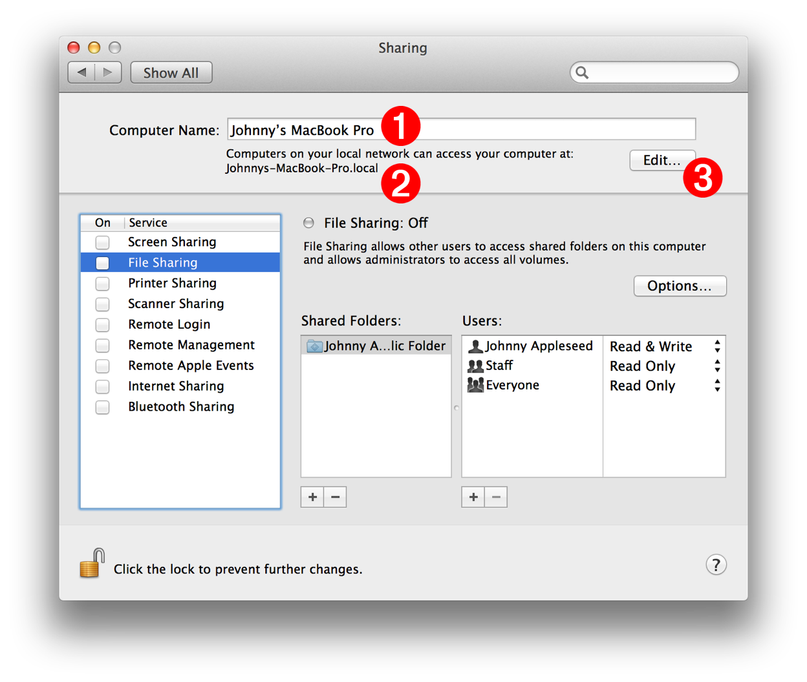
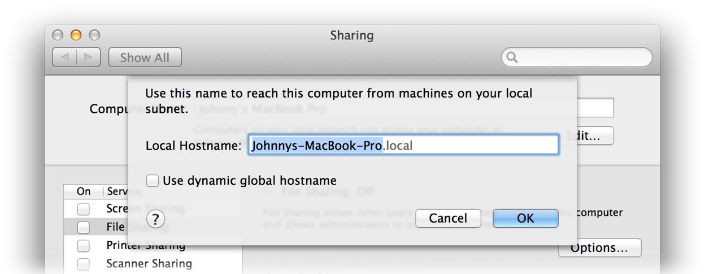
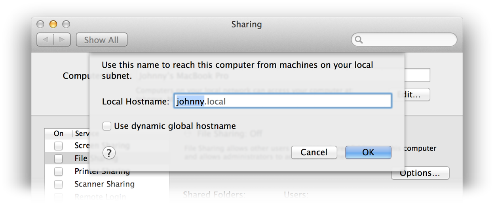
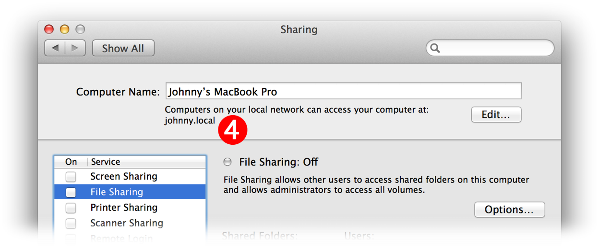
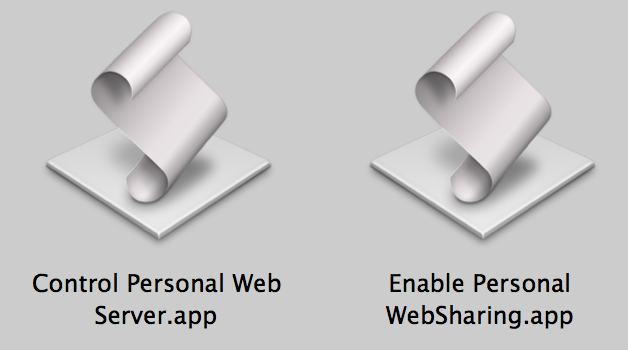
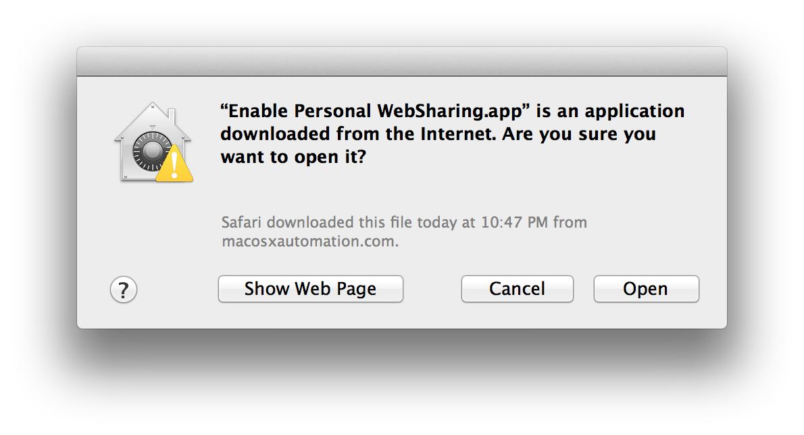
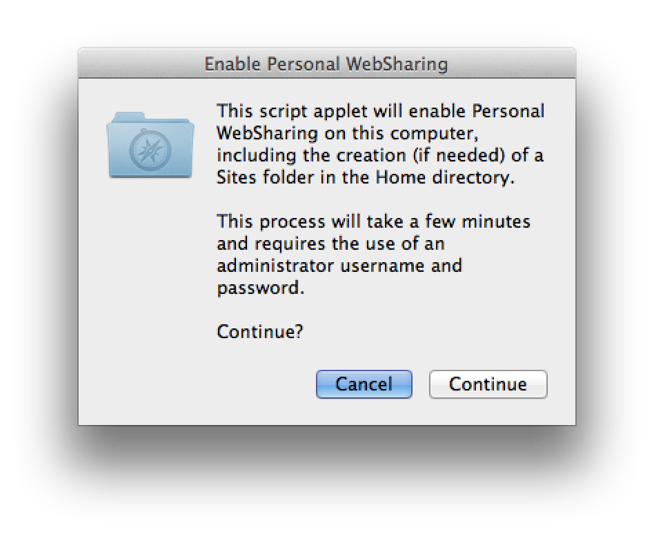
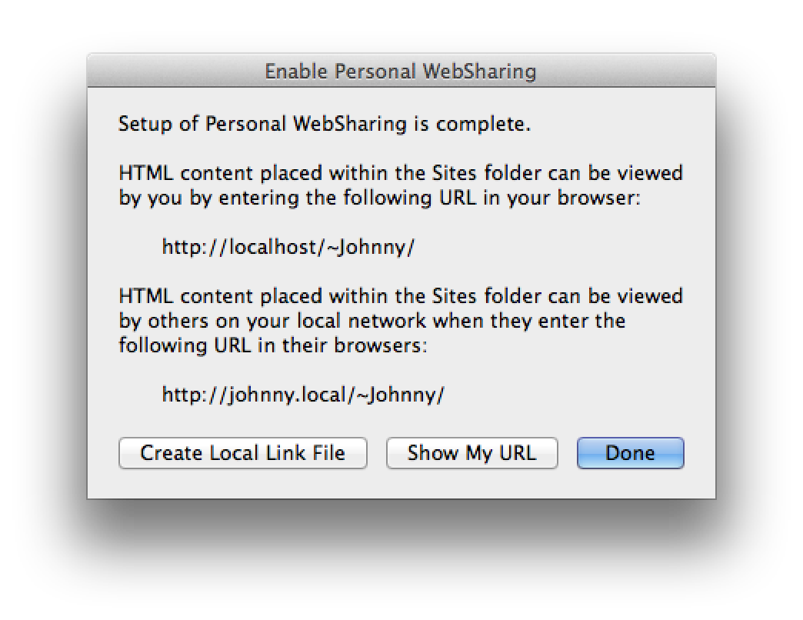
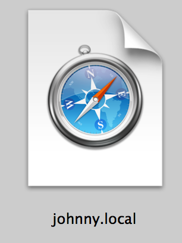
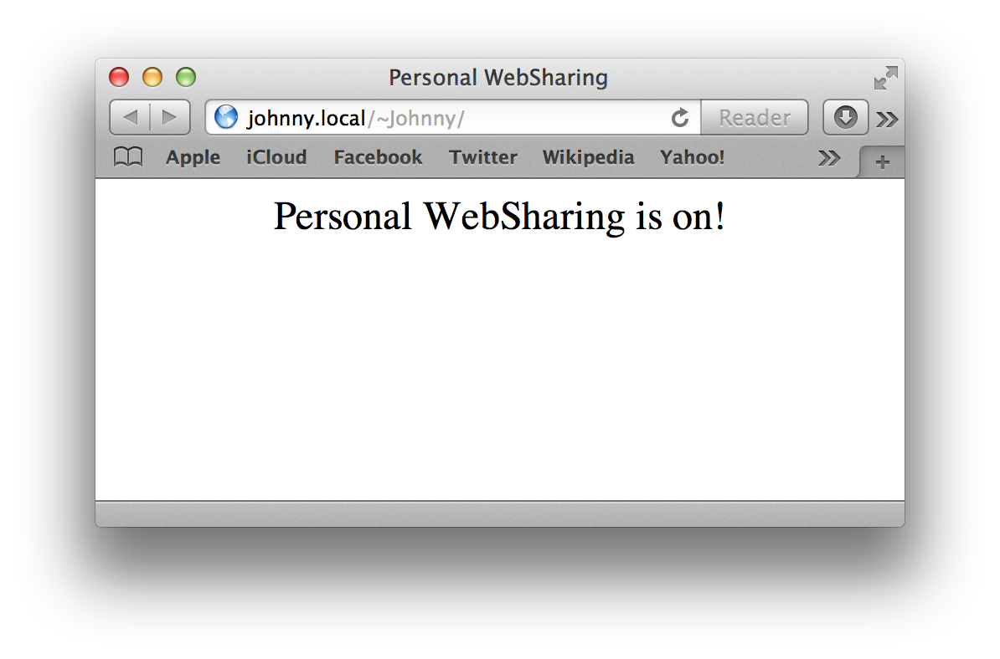

In addition to using AirDrop and Public folder file sharing, OS X offers another way to share files and documents with other computers and devices: Personal Web-Sharing. Because, by design, every copy of OS X comes with its own built-in web server application!
An essential component of the UNIX foundation of OS X is the Apache HTTP Server application, an open-source professional web server project developed and maintained by the Apache Software Foundation. The goal of this project is to provide a secure, efficient and extensible server that provides HTTP services in sync with the current HTTP standards. Apache httpd has been the most popular web server on the Internet since April 1996, and celebrated its 17th birthday as a project in February 2013.
The following steps detail how to enable the Apache web server, already installed on your computer, allowing you to easily share files with other computers and iOS devices.
Every computer running OS X has a local network address that is used by other people on your local network to locate and identify your computer. When you use your computer as a web-server, you want your local network address to be easy for others to remember and enter in their browsers. This content segment will show you how to edit and simplify your local network address (dont’t worry, it’s really easy to do).
Your computer’s local network address can be viewed and edited in the Sharing preference pane in the System Preferences application (see below).
DO THIS ►Open the Sharing preferences pane in the System Preferences application.

The parameters in the preference pane related to web-sharing are these:
1 Computer Name - This text field contains the name currently assigned to your computer. Unless it has been previously altered, the name showing, was automatically generated when your computer was first setup.
2 Local Network Address - Your current local network address is displayed below the computer name field.
3 Edit Button - Pressing this button will display an editing sheet for changing the local network address.
Although the computer name is editable by an administrative user, it is not necessary to change the computer name to achieve a simpler local network address.
DO THIS ►To summon the editing sheet for the local network address, press the Edit… button located to the right of the computer name field 3 (see above).
A drop-down sheet will be displayed in the preferences window, with the current local network address selected for editing (see below).

DO THIS ►Using all lower case letters (numbers are allowed as well), enter a short but unique name for network address. For example, Johnnys-MacBook-Pro could become john89. NOTE: its important that your new local network address not be used by others in your local network.

DO THIS ►After you’ve entered a new local network address, press the OK button to apply the changes (see above).
The simpler local network name will now be displayed below the computer name in the preference pane 4 .

You can now close the System Preferences application. The next steps will be to download and run special AppleScript applets that will perform all of the “behind the scenes” tasks to activate web-sharing on your computer.
Activating personal web-sharing on your computer involves the creation of special files and directories, and setting access permissions in specific ways. Fortunately for you, this is just the kind of task that’s perfect for automation to do for you!
DO THIS ►To enable Personal Web-Sharing, first download two AppleScript applets you will use to enable and control the built-in server in OS X.
In the unarchived folder named “WebSharingApplets” will be two AppleScript applets:

- Enable Personal WebSharing - When this applet is launched, it will create the necessary system server files, add a new Sites folder in your Home directory, start the web server built into OS X, and enable Personal Web-Sharing. NOTE: use of this applet requires an administrator name and password.
- Control Personal Web Server - After running the Enable Personal WebSharing applet to enable personal web-sharing on your computer, this applet can be used to turn the built-in server off or on. By default, the enabled web server will remain active after a computer restart. NOTE: use of this applet requires an administrator name and password.
DO THIS ►If necessary unpack the ZIP archive containing the two applets, then move the downloaded applets into the Utilities folder located within the Applications folder.
Now that you’ve downloaded and put away the AppleScript applets, you’re ready to enable personal web-sharing on your computer.
DO THIS ►Launch the Enable Personal WebSharing applet you placed in the Utilities folder.
Because the applet has been downloaded from an internet website, a security alert dialog will appear, prompting you to decide if you want to open a downloaded application (see below).

DO THIS ►Approve the launching of the applet by pressing the Open button (see above).
An opening dialog for the Enable Personal WebSharing applet will display informing you the use of the applet requires an administrative name and password (see below).

DO THIS ►Press the Continue button (see above) to begin the process of activating personal web-sharing. In the forthcoming security dialog, enter an administrative name and password
The applet will provide spoken alerts as it performs the setup tasks. When the installation has finished, a completion dialog will be displayed (see below).

DO THIS ►In the completion dialog, press the Create Local Link File button (see above), and an internet location file to your built-in website folder will be created (see below).

You can share this internet location file with others, via AirDrop, File Sharing, eMail, or even chats. When the recipient clicks the location file, the default website on your computer will be displayed in their browser!
